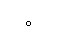

Diagrama de Potencia en función de la velocidad del Tren de Potencia.
Adicionalmente a lo explicado en Implicaciones del comportamiento deseado , este panel presenta la potencia mecánica extraída del viento y también la potencia eléctrica vertida a la Red.
|
|
lineas Verde: curvas de la Potencia mecánica del viento en función de las RPMs del Tren de Potencia, para un determinado valor de Viento. (Notese que estas curvas no implican que el ángulo de Pitch sea constante sino el adecuado para obtener el máximo en cada caso). curva Azul: curva formado por los puntos que garantizan la obtención de la mayor potencia del viento para cada valor de RPMs del Tren de Potencia. Algoritmo Maximum Power Point Track (MPPT). curva Roja: Curva operativa deseada para el control del Tren de Potencia. Definida por los puntos A, B, C, D y E, y un tramo de la curva MPPT. El eje vertical indica la Potencia en pu's (per Unit). El eje horizontal indica las rpms del Tren de Potencia, también en pu's. Se presentan dos potencias: la mecánica extraída del viento y la potencia eléctrica enviada a la Red. Los valores se indican en los indicadores numéricos y también mediante dos iconos. Los indicadores numéricos pueden presentar sus respectivos valores en unidades pu o reales.
El icono El icono  indica la potencia eléctrica que se está enviando a la Red.La observación de la evolución de las posiciones relativas de estos dos iconos es de gran ayuda para seguir las respuestas del aerogenerador a cambios operativos. Por ejemplo durante ráfagas de viento. |
Las razones de este panel son varias: